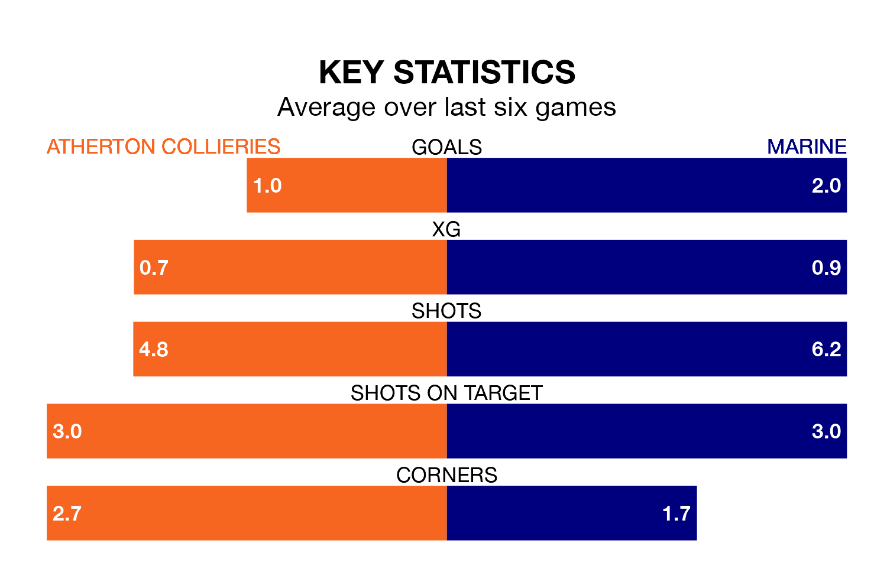

Marine are strong favourites to take all three points despite Atherton Collieries' home advantage in Tuesday's late match.
*Betting Company* are offering odds of 1.44 on Marine sealing the win, with the visitors sitting fifth in Northern Premier League table.
Atherton Collieries, who are 21st in the league and 23 points behind Marine, are priced at 5.25 to win. A draw is set at 4.5.
Atherton Collieries are in bad form in Northern Premier League, with one win and five losses from their last six games.
With three wins and two draws over that period, Marine's form is much better – they have taken 11 points from 18, compared to the home team's three.
With 20 goals in 20 games so far this season, Atherton Collieries are the league's second-lowest scorers with 1.0 goals per game. And they are conceding more than average, letting in 49 goals at a rate of 2.5 per game.
The visitors, meanwhile, are above average scorers, with 1.9 goals per game, compared to a league average of 1.7. They have conceded 1.3 goals per game.
Over the last two years, Atherton Collieries and Marine have played each other twice. Marine won both of them.
Their last meeting was on March 4, when Marine won 1-0 away.
Atherton Collieries' last match was on Saturday, a 3-2 loss against Whitby Town.
Marine beat Gainsborough Trinity 3-1 last time out, also on Saturday.
